Melhor drenagem que já fiz aqui em Itabira, além de atendimento impecável e ambiente acolhedor!!
Ana Flávia C.Google
Endolift, harmonização corporal, drenagem, massagem redutora e estética facial com a Ana Flávia Araújo, na Esplanada da Estação.
5,0 no Google · 37 avaliações
Antes de qualquer tratamento vem a conversa: o que você quer cuidar, no rosto ou no corpo. A partir dela, a Ana monta o protocolo do seu jeito, com hora marcada.
Cada tratamento é montado para o seu corpo e para o que você quer tratar.
Endolift para flacidez e contorno, junto com as técnicas manuais.
É o que as clientes mais repetem nas avaliações do Google.
A Ana Flávia está no último semestre da graduação em Biomedicina.
Fotos do próprio estúdio, na Esplanada da Estação.
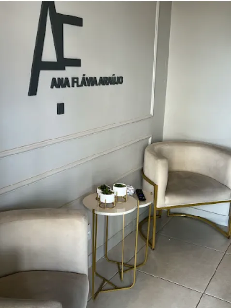
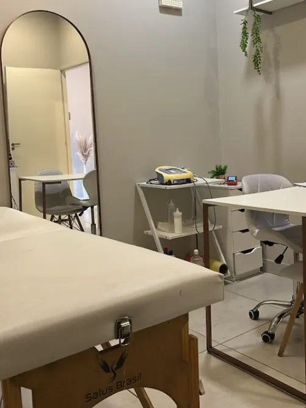
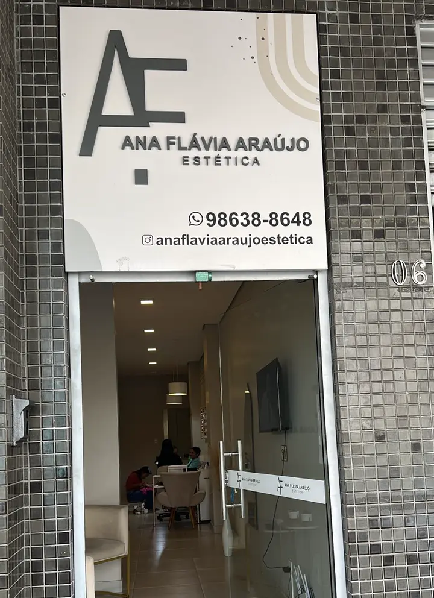
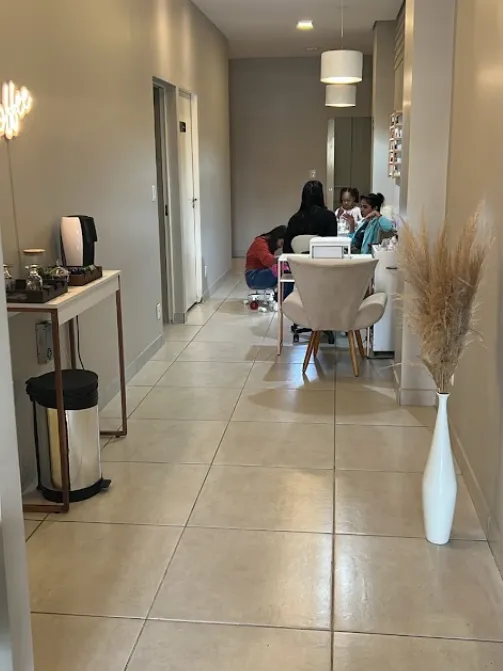
Tudo começa por uma conversa pelo WhatsApp. Toque no tratamento para falar direto com a Ana sobre ele.
Flacidez, celulite, gordura localizada e contorno, com protocolos montados para cada região.
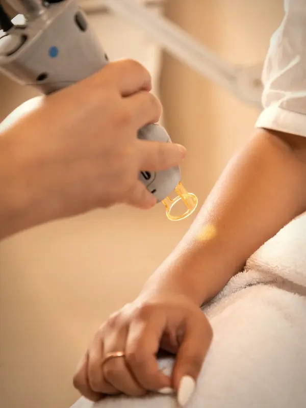
Tecnologia a laser para flacidez e contorno, dentro de um protocolo pensado para você.
Falar sobre o Endolift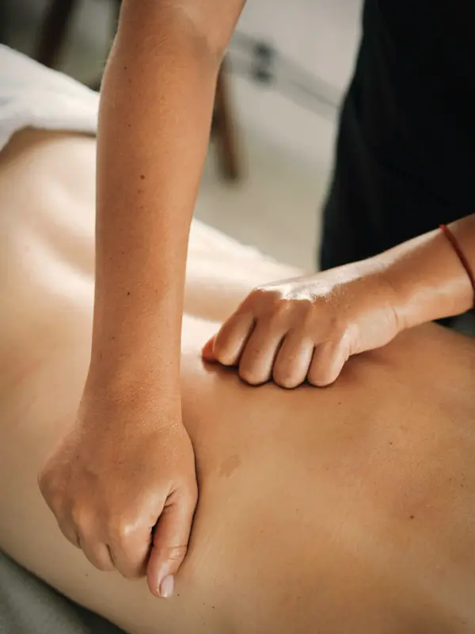
Protocolos para gordura localizada e contorno do corpo, combinando técnicas conforme o seu objetivo.
Agendar uma conversaCuidados com a firmeza e a textura da pele, em protocolos para cada região do corpo.
Agendar uma conversaMassagem que estimula a circulação e ajuda a aliviar a retenção de líquidos. Também pelo Wellhub.
Agendar drenagemMassagem firme e modeladora, parte dos protocolos de contorno do corpo. Também pelo Wellhub.
Agendar massagemPele do rosto, sobrancelhas, cílios e unhas, com hora marcada.
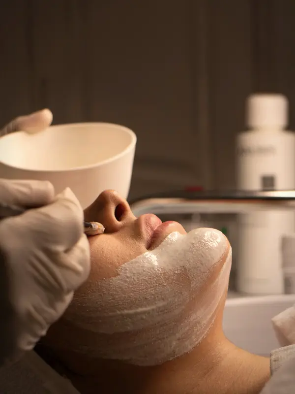
Limpeza e cuidados com a pele do rosto, conforme o que a sua pele pede.
Agendar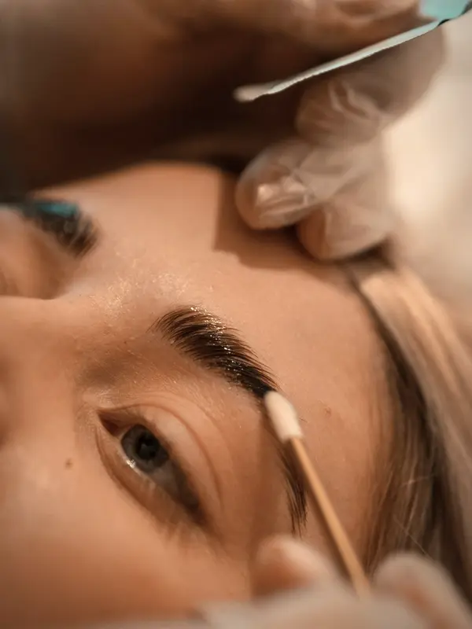
Sobrancelhas desenhadas e preenchidas com pigmento, em harmonia com o seu rosto.
Agendar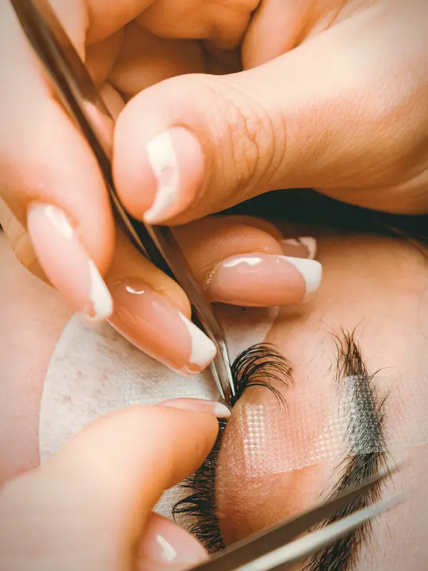
Procedimentos para valorizar o olhar no dia a dia.
Agendar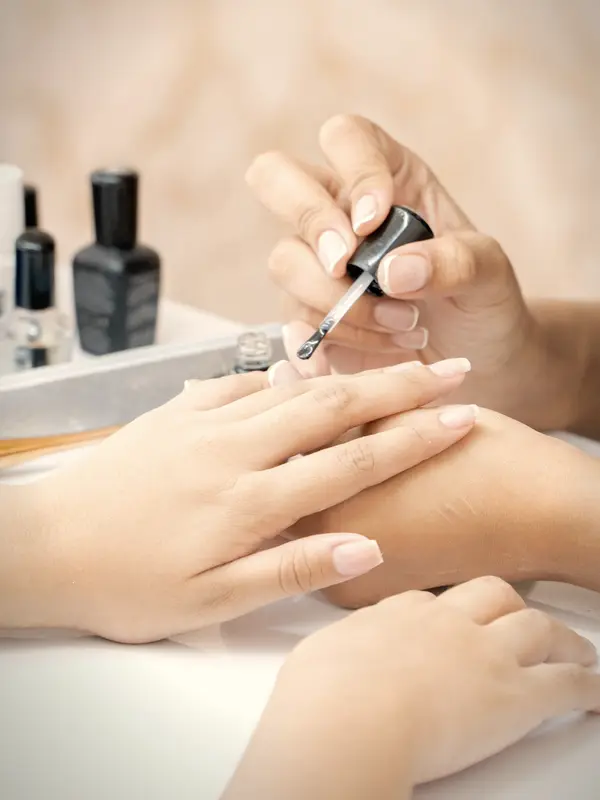
Manicure e pedicure com hora marcada.
AgendarNão achou o que procura? Pergunte pelo WhatsApp: os protocolos são montados para cada pessoa.
Arraste a linha para comparar. São fotos de clientes da Ana Flávia.
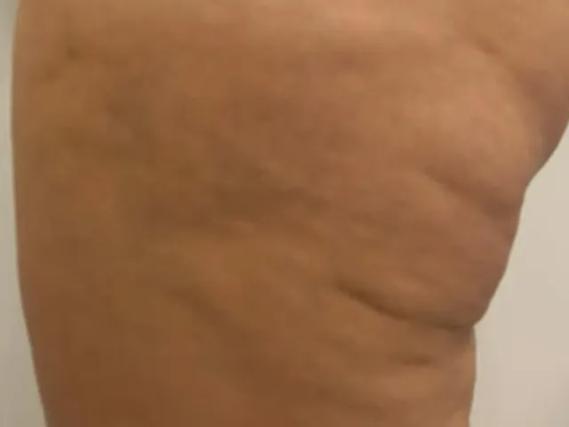
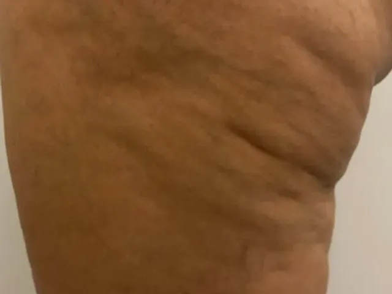
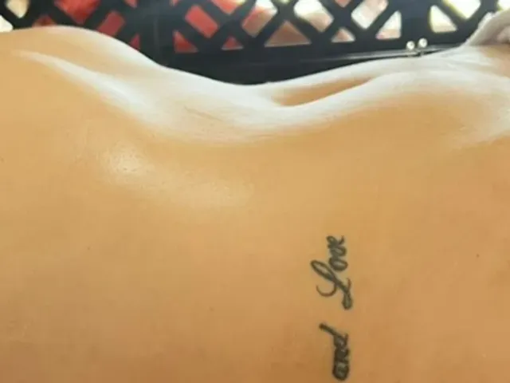
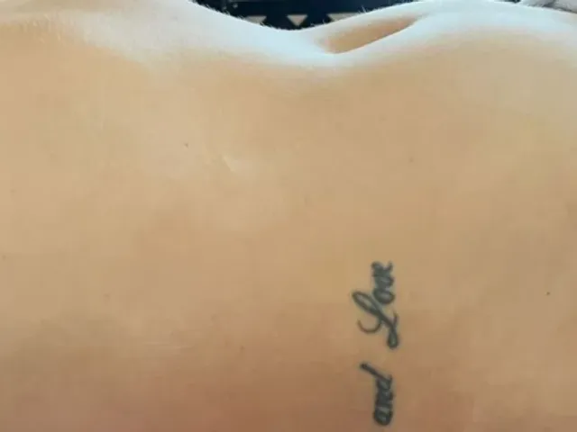
Resultados variam de pessoa para pessoa.
Massagem redutora e drenagem linfática pelo Wellhub, com horário agendado. Até 8 check-ins por mês.
Confira as regras do seu plano no app do Wellhub.
Estética corporal e facial · Acadêmica de Biomedicina
À frente do estúdio na Esplanada da Estação, a Ana trabalha com protocolos personalizados: cada tratamento é montado a partir do que você quer cuidar, e combina tecnologia, como o Endolift, com as técnicas manuais de drenagem e massagem.
Tem cliente que faz drenagem com ela toda semana e tem quem a acompanha há anos. Elas contam isso nas avaliações do Google.
Hora marcada, ambiente acolhedor e um protocolo pensado para você.
Melhor drenagem que já fiz aqui em Itabira, além de atendimento impecável e ambiente acolhedor!!
Excelente atendimento, ambiente agradável e muito acolhedor. A massagem foi incrível e os procedimentos realizados com muito profissionalismo e cuidado. Super recomendo!
Excelente. Serviço de boa qualidade e bons resultados. Faço drenagem com Ana desde de Novembro e hoje vejo o quanto meu corpo se mantém leve com minimo de retenção. O que antes me incomodava muito.
Excelentes profissionais! Um atendimento de qualidade!! Super indico! Sou cliente a muitos anos.
Ótima profissional, educada e gentil. Fui muito bem atendida. Deus abençoe 😍🙏🏿
Resultados de clientes, protocolos e os dias com horário livre. Toque num post pra abrir no Instagram.
Pelo WhatsApp (31) 98638-8648. O atendimento é sempre com horário agendado, então vale chamar com alguns dias de antecedência.
Sim, nos planos Gold+, Platinum, Diamond e Diamond+. A massagem redutora usa 2 check-ins e a drenagem linfática, 3, com até 8 check-ins por mês. O agendamento é pelo WhatsApp.
Os protocolos são personalizados. O primeiro passo é contar para a Ana o que você quer tratar, e a partir disso ela indica o caminho para o seu caso.
Rua Suzinha de Sá Martins, 201, loja 5, Esplanada da Estação, em Itabira. Segunda das 13h às 19h, terça e quarta das 8h às 19h, quinta das 8h às 18h, sexta das 8h às 19h e sábado das 8h às 13h.
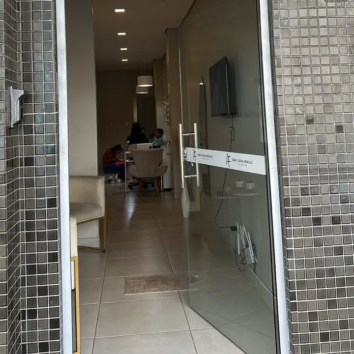